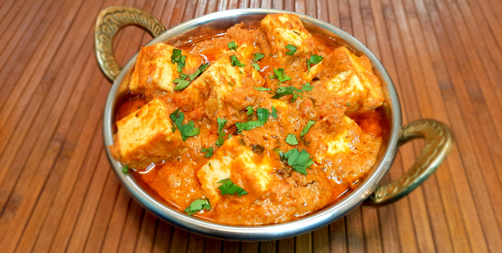

Butter masala is known for its rich and aromatic marinade, which includes a blend of spices and yogurt. This marinade infuses the meat or cheese with a complex and savory flavor profile, combining spices like cumin, coriander, turmeric, paprika, garam masala, and garlic. Traditional tikka is cooked in a tandoor, a clay oven that imparts a unique smoky flavor and allows for even cooking. The tandoor's high temperatures create a charred exterior while keeping the interior juicy and tender.
Ingredients
- 1 cup yogurt
- 1 tablespoon lemon juice
- 4 teaspoons ground cumin, divided
- 1 teaspoon ground cinnamon
- 2 teaspoons cayenne pepper
- 2 teaspoons freshly ground black pepper
- 1 tablespoon minced fresh ginger
- 2 teaspoons salt, divided, or more to taste
- paneer, cut into bite-size pieces
- 1 tablespoon butter
- 1 clove garlic, minced
- 1 jalapeno pepper, finely chopped
- 2 teaspoons paprika
- 1 (8 ounce) can tomato sauce
- 1 cup heavy cream
- ¼ cup chopped fresh cilantro
Directions
Combine yogurt, lemon juice, 2 teaspoons cumin, cinnamon, cayenne, black pepper, ginger, and 1 teaspoon salt in a large bowl.
Stir in chicken, cover, and refrigerate for 1 hour.
Preheat a grill for high heat.
Lightly oil the grill grate. Thread chicken onto skewers, and discard marinade.
Grill until juices run clear, about 5 minutes on each side.
Melt butter in a large heavy skillet over medium heat. Sauté garlic and jalapeño for 1 minute. Season with remaining 2 teaspoons cumin, paprika, and remaining 1 teaspoon salt. stir in tomato sauce and cream. Simmer on low heat until sauce thickens, about 20 minutes.
Add grilled chicken, and simmer for 10 minutes. Transfer to a serving platter, and garnish with fresh cilantro.
.png)